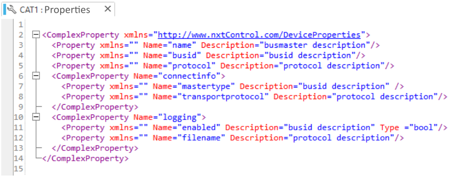
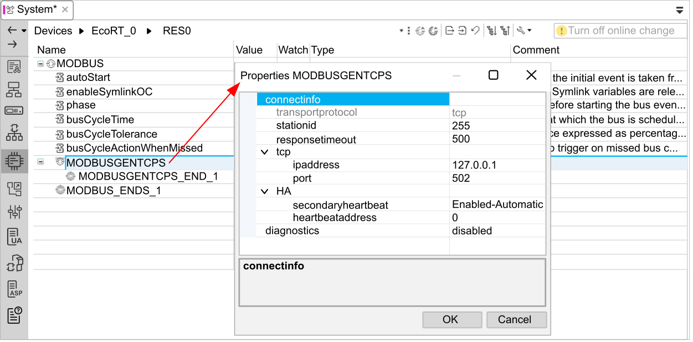
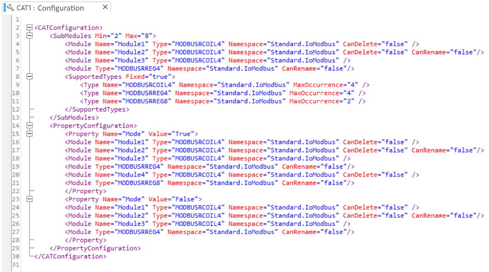
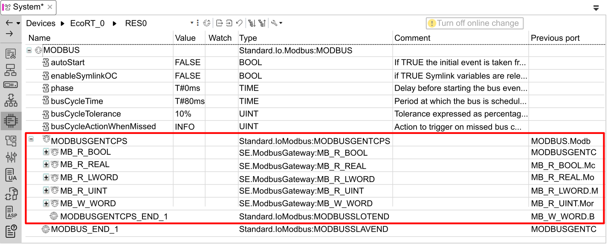
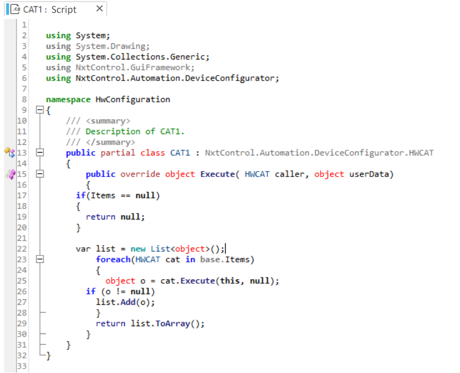

Use the context menu entries of the hardware CAT configuration node () to create or edit a hardware CAT configuration during buildtime. The HWConfig node is used primarily by equipment manufacturers to define their hardware characteristics and how to integrate their equipment.
The following hardware features can be configured:
Select to open an XML tagging window and create hardware device properties:

The properties you create are device dependent. (The image, above, shows the default Properties screen.)
After an instance of the hardware device is added to the solution in the Hardware Configuration editor, right click on that device and select Properties to display the CAT properties for the instantiated device. Depending on the device, properties may be editable or read-only. The following image is an example of properties for a the MODBUSGENTCPS generic device:

Select to define the structure of the new hardware CAT. Its structure can include various child elements, for example, the default supported types, sub-modules, and registers. The structure you create is device dependent:

The image, above, shows the default Configuration screen.
When an instance of the hardware device is added to the solution in the Hardware Configuration editor, any required child items automatically appear as sub-nodes beneath the device.
Using this mechanism, you can define a fixed configuration or a configuration that can change based on the value of some properties. You can also specify if the element can be renamed and the maximum number of child instances that can be created:

Select to add C# script that can verify the hardware configuration and its settings. For more detailed information, you need to contact Schneider Electric support.

The image, above, shows the default Script screen.
Select to create a schema that can validate your defined properties (values, number of elements, hierarchy...). This schema is used when you save the hardware configuration, compile the device, or build the solution.
to open the Property Control wizard. Use this wizard to specify the name and size (height and width) of a new HMI control for the hardware CAT. Click Finish to close the wizard, and display the editor which consists of two screens:
a Designer you can use to design graphical content for the HMI. Refer to the topic Canvas Editor for information on how to use the designer tool.
a Source Code window you can use to create and edit C# code for the graphical content.
Use this to add an additional C# code item to a CAT Script as a sub-node. Using sub-node items lets you better organize the hardware CAT C# code by dividing it into reusable code objects.
This menu item is available only after a CAT Script node has been added to the hardware CAT configuration.